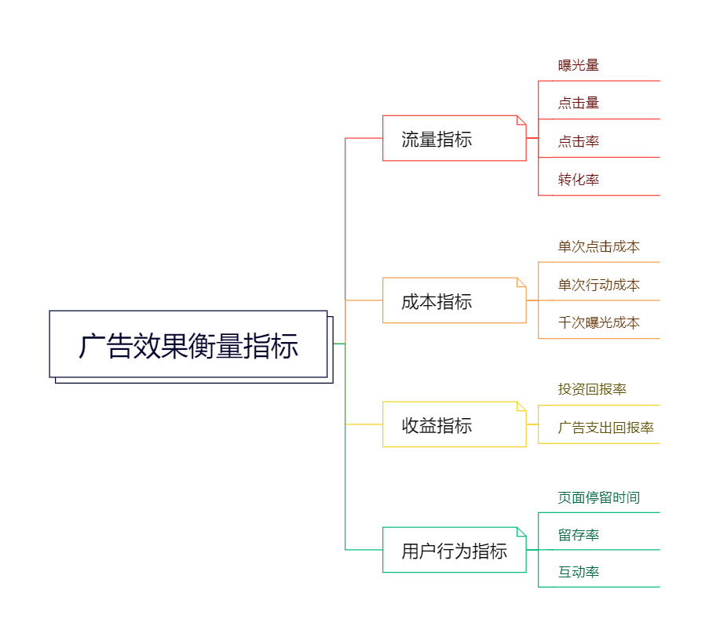
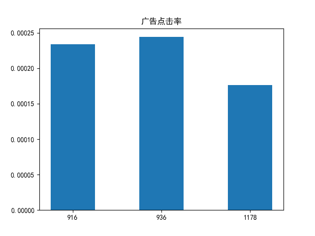
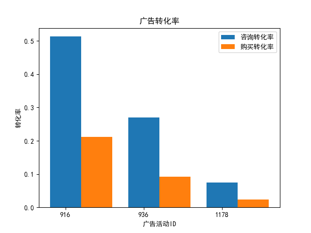
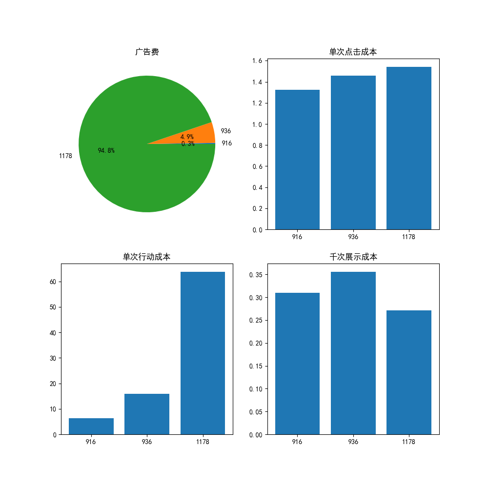
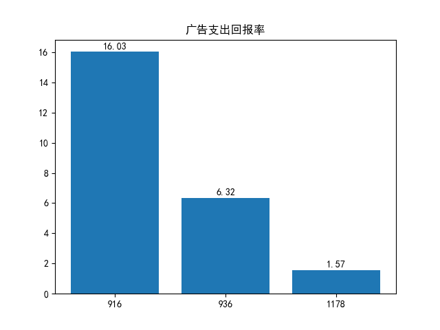
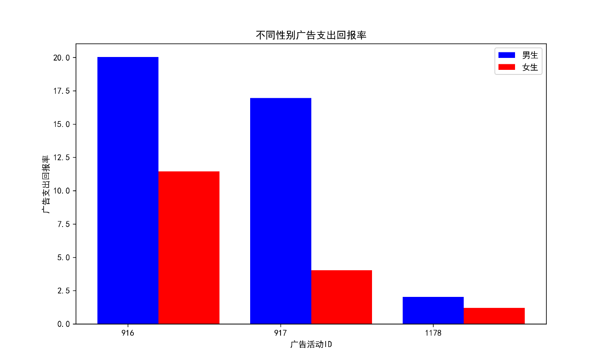
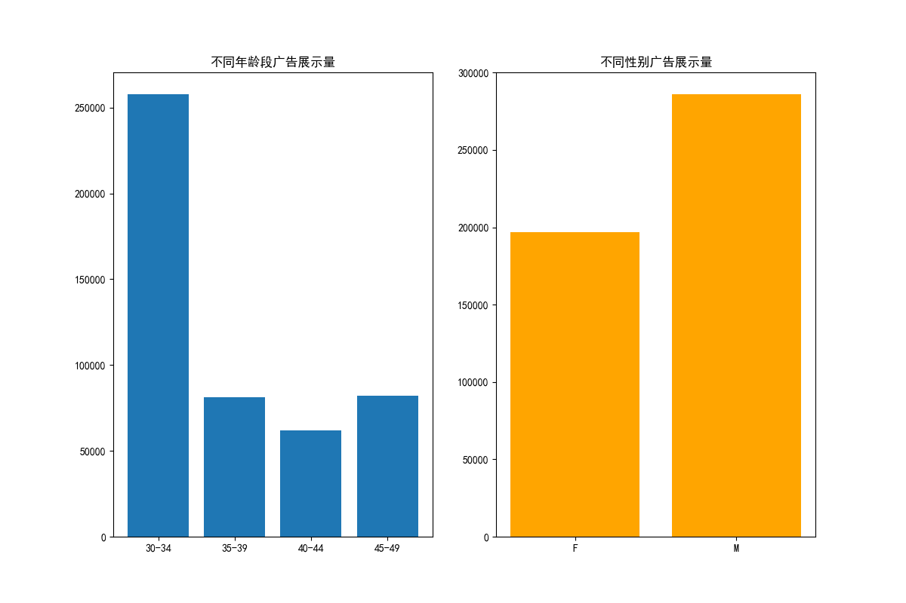
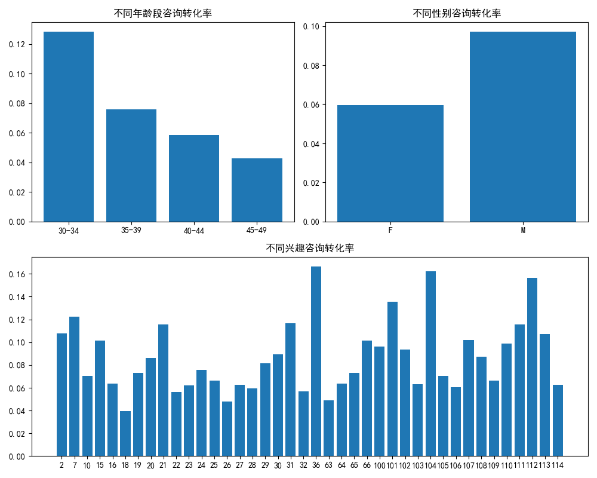

假设你创立了一家奶茶店，第一季度在某平台投放了3组广告，如何根据已投放广告的效果确定第二季度广告投放策略，以达到更好的效果？当今，广告已成为企业和品牌获取潜在客户、提升市场份额的重要手段。评估广告效果不仅能够帮助决策者了解广告的真正价值，还能为优化未来的营销策略提供数据支持。
本案例基于Kaggle上的一个社交媒体广告活动数据，分析广告投放效果及影响因素。
案例中用到的数据改编自Kaggle网站（https://www.kaggle.com/datasets/loveall/clicks-conversion-tracking）。为描述方便，将原始数据集中的字段名修改为了中文，字段信息分别为：
数据集中共有1145条记录，11个字段。
安装命令：pip install pandas matplotlib -i
https://pypi.tuna.tsinghua.edu.cn/simple
衡量广告投放效果的核心指标有流量指标、成本指标、收益指标、用户行为指标等，如图7-1所示。

图7-1 常用广告效果衡量指标
结合本案例的数据集，下面重点讨论流量指标、成本指标和收益指标。
示例：广告花费200元，获得500次点击，则 \( CPC = \frac{200}{500} = 0.4 \) 元/次。
投资回报指标衡量广告投入与收益的关系，帮助判断广告支出合理性，核心指标如下：
数据分析的基本流程分为5个步骤，具体如下：
相关性分析用于研究两个或多个变量之间的关联程度，核心作用包括：
Pandas中用DataFrame.corr()计算各列间相关性，返回相关系数矩阵，语法如下：
DataFrame.corr(method='pearson', min_periods=1)关键参数说明：
method：相关性计算方法，默认'pearson'（皮尔逊系数，衡量线性关系），可选'kendall'（肯德尔秩相关）、'spearman'（斯皮尔曼秩相关，适用于非线性关系）。
min_periods：每对列需满足的最小观测值数量，默认1。import pandas as pd
data = {
"广告投入": [1000, 1500, 800, 1200],
"销量": [4000, 7500, 3500, 6000],
"评分": [4.2, 4.5, 3.9, 4.1]
}
df = pd.DataFrame(data, index=["一月", "二月", "三月", "四月"])
# 计算相关系数矩阵
corr_matrix = df.corr()
print(corr_matrix)输出结果如下所示：
相关性分析结果
| 广告投入 | 销量 | 评分 | |
|---|---|---|---|
| 广告投入 | 1.000000 | 0.981363 | 0.904196 |
| 销量 | 0.981363 | 1.000000 | 0.811503 |
| 评分 | 0.904196 | 0.811503 | 1.000000 |
结果解读：广告投入与销量、评分的相关系数分别约为0.98和0.90（强正相关），说明广告投入对销量和用户评分影响显著；销量与评分相关系数约0.81（强正相关），表明高评分可能促进销量提升。
分类汇总是对同类数据进行统计汇总（求和、均值等），Pandas中用groupby()方法实现，核心是明确"分类字段、汇总字段、汇总方式"。
groupby()方法语法：
df.groupby(by, axis, level, as_index, sort, ……)常用参数说明如表7-1所示：
表7-1 groupby()参数说明
| 参数 | 含义 |
|---|---|
| by | 分组依据，可为列名、列名列表或返回分组值的函数 |
| axis | 分组轴向：axis=0（行方向，默认），axis=1（列方向） |
| level | 用于分组的索引级别（默认无） |
| as_index | 是否将分组键作为行索引：True（默认），False（分组键为普通列） |
| sort | 分组内数据是否按索引排序：True（默认），False（保留原始顺序） |
分类汇总常用的有两种方式：
df.groupby(分类列)[汇总列].汇总函数()df.groupby(分类列).agg({"列1":"汇总函数", "列2":"汇总函数", ……})常用汇总函数如表7-2所示：
表7-2 常用汇总函数
| 函数 | 功能 |
|---|---|
| count() | 统计非空值个数 |
| sum() | 求和 |
| mean() | 求均值 |
| max() | 求最大值 |
| min() | 求最小值 |
| median() | 求中位数 |
| mode() | 求众数 |
| var() | 求方差 |
| std() | 求标准差 |
| quantile() | 求分位数 |
import pandas as pd
# 读取数据
salesData = pd.read_excel('data/sales.xlsx')
# 分类字段：公司；汇总字段：销售额；汇总方式：求和
# 方式1：返回Series（分类字段为索引）
shopSale1 = salesData.groupby('公司')['销售额'].sum()
print("方式1结果（Series）：")
print(shopSale1)
# 方式2：返回DataFrame（分类字段为行标签）
shopSale2 = salesData.groupby('公司').agg({"销售额":"sum"})
print("\n方式2结果（DataFrame）：")
print(shopSale2)
# 方式3：分类字段为普通列（as_index=False）
shopSale3 = salesData.groupby('公司', as_index=False).agg({"销售额":"sum"})
print("\n方式3结果（分类字段为列）：")
print(shopSale3)方式1输出结果为Series类型，分类字段“公司”是结果Series的index
| 公司 | |
|---|---|
| 京东 | 886543 |
| 天猫 | 515871 |
| 拼多多 | 258077 |
| 苏宁易购 | 386806 |
方式2输出结果为DataFrame类型，分类字段“公司”为行标签
| 销售额 | |
|---|---|
| 公司 | |
| 京东 | 886543 |
| 天猫 | 515871 |
| 拼多多 | 258077 |
| 苏宁易购 | 386806 |
方式3输出结果为DataFrame类型，因为设置了as_index=False，分类字段“公司”为普通列
| 公司 | 销售额 | |
|---|---|---|
| 0 | 京东 | 886543 |
| 1 | 天猫 | 515871 |
| 2 | 拼多多 | 258077 |
| 3 | 苏宁易购 | 386806 |
提示：若使用NumPy统计函数（如np.sum），agg()中无需加引号，示例：agg({"销售额": np.sum})。
本案例从流量获取、成本、收益三方面分析广告的投放效果，为商家进行广告投放和优化提供参考。
import pandas as pd
import matplotlib.pyplot as plt# 读入数据（encoding='gbk'适配中文）
df = pd.read_csv('data/KAG_conversion_data.csv', encoding='gbk')读入数据后，需先了解数据结构、缺失值、数据类型等基本信息，常用方法如表7-3所示：
表7-3 DataFrame基本信息查看方法
| 方法 | 说明 |
|---|---|
| df.head(n) | 读取前n行数据，默认n=5 |
| df.tail(n) | 读取最后n行数据，默认n=5 |
| df.info() | 查看索引、列数、数据类型、非空值个数、内存使用情况 |
| df.describe() | 数字列：返回均值、标准差、分位数等；字符串列：返回值计数、唯一值等 |
示例代码：
# 查看前2条记录
print("数据前2行：")
print(df.head(2))
# 查看数据分布与缺失值
print("\n数据信息：")
print(df.info())输出结果（数据信息部分）：
<class 'pandas.core.frame.DataFrame'>
RangeIndex: 1145 entries, 0 to 1144
Data columns (total 11 columns):
# Column Non-Null Count Dtype
--- ------ -------------- -----
0 广告ID 1145 non-null int64
1 广告活动ID 1145 non-null int64
2 fb追踪ID 1145 non-null int64
3 年龄段 1145 non-null object
4 性别 1145 non-null object
5 兴趣ID 1145 non-null int64
6 展示量 1144 non-null float64
7 点击量 1144 non-null float64
8 广告费 1145 non-null float64
9 咨询量 1145 non-null int64
10 购买量 1145 non-null int64
dtypes: float64(3), int64(6), object(2)
memory usage: 98.5+ KB
None结果解读：数据集共1145条记录、11列，“展示量”“点击量”列各有1个缺失值（非空数1144），需后续清洗。
重点处理缺失值和重复值，确保数据质量：
# 1. 查看缺失值行数
nanNum = df.isnull().any(axis=1).sum()
print(f'Total number of NA lines is: {nanNum}') # 输出：Total number of NA lines is: 1
# 2. 查看重复值行数
dupNum = df.duplicated().sum()
print(f'Total number of duplicate lines is: {dupNum}') # 若存在重复值，输出对应数量
# 3. 删除缺失值和重复值（inplace=True：在原数据上操作）
df.dropna(inplace=True) # 删除含缺失值的记录
df.drop_duplicates(inplace=True) # 删除重复记录
print(f'清洗后数据量：{len(df)} 条') # 输出：清洗后数据量：1144 条（删除1条缺失值记录）分析广告效果关键指标（展示量、点击量、咨询量、购买量）的相关性，需先抽取目标列：
# 1. 抽取目标列
df_new = df[['展示量', '点击量', '咨询量', '购买量']]
# 2. 解决中文列名对齐问题
pd.set_option('display.unicode.ambiguous_as_wide', True)
pd.set_option('display.unicode.east_asian_width', True)
# 3. 计算相关系数矩阵
corr_matrix = df_new.corr()
print("相关性矩阵：")
print(corr_matrix)输出结果：
广告数据相关性分析结果
| 展示量 | 点击量 | 咨询量 | 购买量 | |
|---|---|---|---|---|
| 展示量 | 1.000000 | 0.948514 | 0.812838 | 0.684249 |
| 点击量 | 0.948514 | 1.000000 | 0.694632 | 0.559526 |
| 咨询量 | 0.812838 | 0.694632 | 1.000000 | 0.864034 |
| 购买量 | 0.684249 | 0.559526 | 0.864034 | 1.000000 |
结果解读：
数据集中含3组广告活动（ID：916、936、1178），从“量”“率”两维度对比分析。
用分类汇总统计各广告活动的核心“量”指标：
# 分类字段：广告活动ID；汇总字段：展示量、点击量、咨询量、购买量；汇总方式：求和
ad_statis = df.groupby('广告活动ID', as_index=False).agg({
'展示量': 'sum',
'点击量': 'sum',
'咨询量': 'sum',
'购买量': 'sum'
})
print("各广告活动核心量指标：")
print(ad_statis)输出结果：
| 广告活动ID | 展示量 | 点击量 | 咨询量 | 购买量 | |
|---|---|---|---|---|---|
| 0 | 916 | 482925.0 | 113.0 | 58 | 24 |
| 1 | 936 | 8136219.0 | 1985.0 | 539 | 183 |
| 2 | 1178 | 204823716.0 | 36068.0 | 2674 | 874 |
结果解读：广告1178的展示量、点击量等“量”指标均最大（展示量约为广告916的424倍），但“量”大不代表效果好，需进一步分析“率”指标。
计算并对比点击率、咨询转化率、购买转化率：
# 计算率指标
ad_statis['点击率'] = ad_statis['点击量'] / ad_statis['展示量']
ad_statis['咨询转化率'] = ad_statis['咨询量'] / ad_statis['点击量']
ad_statis['购买转化率'] = ad_statis['购买量'] / ad_statis['点击量']
print("各广告活动率指标（保留6位小数）：")
print(ad_statis[['广告活动ID', '点击率', '咨询转化率', '购买转化率']].round(6))输出结果：
| 广告活动ID | 点击率 | 咨询转化率 | 购买转化率 | |
|---|---|---|---|---|
| 0 | 916 | 0.000234 | 0.513274 | 0.212389 |
| 1 | 936 | 0.000244 | 0.270665 | 0.092238 |
| 2 | 1178 | 0.000176 | 0.073999 | 0.024177 |
可视化点击率对比：
# 设置中文显示
plt.rcParams['font.sans-serif'] = ['SimHei']
plt.rcParams['axes.unicode_minus'] = False
# 广告活动ID转为字符串（避免视为数值）
ad_statis['广告活动ID'] = ad_statis['广告活动ID'].astype('str')
# 绘制点击率柱形图
plt.figure(figsize=(8, 5))
plt.bar(ad_statis['广告活动ID'], ad_statis['点击率'], width=0.5, color='#4B96E9')
plt.title('不同广告活动点击率')
plt.xlabel('广告活动ID')
plt.ylabel('点击率')
plt.grid(axis='y', alpha=0.3)
plt.savefig('image/7/ad_click_rate.png', dpi=300, bbox_inches='tight')
plt.show()
图7-2 不同广告活动点击率
可视化咨询转化率与购买转化率对比：
plt.figure(figsize=(10, 6))
# 设置柱形图位置与宽度
x1 = range(len(ad_statis['广告活动ID']))
width = 0.4
x2 = [x + width for x in x1]
# 绘制双柱形图
plt.bar(x1, ad_statis['咨询转化率'], width, label='咨询转化率', color='#3498DB')
plt.bar(x2, ad_statis['购买转化率'], width, label='购买转化率', color='#E74C3C')
# 设置标签与标题
plt.xticks(x1, ad_statis['广告活动ID'])
plt.xlabel('广告活动ID')
plt.ylabel('转化率')
plt.title('不同广告活动转化率对比')
plt.legend()
plt.grid(axis='y', alpha=0.3)
plt.savefig('image/7/ad_conversion_rate.png', dpi=300, bbox_inches='tight')
plt.show()
图7-2 不同广告活动转化率
结果解读：
计算并对比三组广告的单次点击成本、单次行动成本、千次展示成本：
# 1. 分类汇总广告费及核心量指标
ad_spend = df.groupby('广告活动ID', as_index=False).agg({
'广告费': 'sum',
'展示量': 'sum',
'点击量': 'sum',
'购买量': 'sum'
})
# 2. 计算成本指标
ad_spend['单次点击成本'] = ad_spend['广告费'] / ad_spend['点击量']
ad_spend['单次行动成本'] = ad_spend['广告费'] / ad_spend['购买量']
ad_spend['千次展示成本'] = (ad_spend['广告费'] / ad_spend['展示量']) * 1000
# 3. 广告活动ID转为字符串
ad_spend['广告活动ID'] = ad_spend['广告活动ID'].astype('str')
print("各广告活动成本指标（保留6位小数）：")
print(ad_spend[['广告活动ID', '广告费', '单次点击成本', '单次行动成本', '千次展示成本']].round(6))输出结果：
| 序号 | 广告活动ID | 广告费 | 单次点击成本 | 单次行动成本 | 千次展示成本 |
|---|---|---|---|---|---|
| 0 | 916 | 149.710001 | 1.324867 | 6.237917 | 0.310007 |
| 1 | 936 | 2893.369999 | 1.458352 | 15.810765 | 0.355967 |
| 2 | 1178 | 55662.149959 | 1.543256 | 63.832741 | 0.271756 |
可视化成本指标（2x2子图）：
# 创建2x2子图布局
fig, ax = plt.subplots(2, 2, figsize=(12, 10))
plt.rcParams['font.sans-serif'] = ['SimHei']
# 子图1：广告费饼图
ax[0, 0].pie(ad_spend['广告费'], labels=ad_spend['广告活动ID'], autopct='%1.1f%%', colors=['#4B96E9', '#F1C40F', '#E74C3C'])
ax[0, 0].set_title('广告费占比')
# 子图2：单次点击成本柱形图
ax[0, 1].bar(ad_spend['广告活动ID'], ad_spend['单次点击成本'], color='#4B96E9')
ax[0, 1].set_title('单次点击成本（元/次）')
ax[0, 1].grid(axis='y', alpha=0.3)
# 子图3：单次行动成本柱形图
ax[1, 0].bar(ad_spend['广告活动ID'], ad_spend['单次行动成本'], color='#F1C40F')
ax[1, 0].set_title('单次行动成本（元/次购买）')
ax[1, 0].grid(axis='y', alpha=0.3)
# 子图4：千次展示成本柱形图
ax[1, 1].bar(ad_spend['广告活动ID'], ad_spend['千次展示成本'], color='#E74C3C')
ax[1, 1].set_title('千次展示成本（元/千次）')
ax[1, 1].grid(axis='y', alpha=0.3)
# 调整子图间距
plt.tight_layout()
plt.savefig('image/7/ad_cost.png', dpi=300, bbox_inches='tight')
plt.show()
图7-3 不同广告活动成本比较
结果解读：
假设单次购买收入100元，计算广告支出回报率（ROAS）：
# 计算ROAS（保留2位小数）
ad_spend['广告支出回报率'] = (ad_spend['购买量'] * 100 / ad_spend['广告费']).round(2)
# 可视化ROAS并标注数值
plt.figure(figsize=(8, 6))
bars = plt.bar(ad_spend['广告活动ID'], ad_spend['广告支出回报率'], color='#2ECC71')
# 为柱形图添加数值标签
for bar in bars:
height = bar.get_height()
plt.text(bar.get_x() + bar.get_width()/2., height + 0.2,
str(height), ha='center', va='bottom', fontsize=12)
plt.title('不同广告活动支出回报率（ROAS）')
plt.xlabel('广告活动ID')
plt.ylabel('ROAS（收入/广告费）')
plt.grid(axis='y', alpha=0.3)
plt.savefig('image/7/ad_spend_return_rate.png', dpi=300, bbox_inches='tight')
plt.show()
print("各广告活动ROAS：")
print(ad_spend[['广告活动ID', '广告支出回报率']])
图7-4 不同广告支出回报率
输出结果：
| 广告活动ID | 广告支出回报率 | |
|---|---|---|
| 0 | 916 | 16.03 |
| 1 | 936 | 6.32 |
| 2 | 1178 | 1.57 |
结果解读：广告916的ROAS（16.03）是广告1178（1.57）的10倍，每投入1元广告可获得16.03元收入，投资回报最优。
从性别、年龄段、兴趣ID维度分析受众对广告效果的影响，为精准投放提供依据。
# 1. 性别维度：广告活动ID + 性别的汇总
ad_gender = df.groupby(['广告活动ID', '性别'], as_index=False).agg({
'展示量': 'sum', '点击量': 'sum', '咨询量': 'sum', '购买量': 'sum', '广告费': 'sum'
})
ad_gender['广告支出回报率'] = (ad_gender['购买量'] * 100 / ad_gender['广告费']).round(2)
# 2. 年龄段维度：广告活动ID + 年龄段的汇总
ad_age = df.groupby(['广告活动ID', '年龄段'], as_index=False).agg({
'展示量': 'sum', '点击量': 'sum', '咨询量': 'sum', '购买量': 'sum', '广告费': 'sum'
})
# 3. 兴趣ID维度：广告活动ID + 兴趣ID的汇总
ad_interest = df.groupby(['广告活动ID', '兴趣ID'], as_index=False).agg({
'展示量': 'sum', '点击量': 'sum', '咨询量': 'sum', '购买量': 'sum', '广告费': 'sum'
})
ad_interest.sort_values(by='兴趣ID', ascending=True, inplace=True)# 筛选各广告活动的男性、女性ROAS
ad_916_gender = ad_gender[ad_gender['广告活动ID'] == 916]
ad_936_gender = ad_gender[ad_gender['广告活动ID'] == 936]
ad_1178_gender = ad_gender[ad_gender['广告活动ID'] == 1178]
# 整理数据用于可视化
gender_roas = pd.DataFrame({
'广告活动ID': ['916', '916', '936', '936', '1178', '1178'],
'性别': ['M', 'F', 'M', 'F', 'M', 'F'],
'ROAS': [
ad_916_gender[ad_916_gender['性别']=='M']['广告支出回报率'].values[0],
ad_916_gender[ad_916_gender['性别']=='F']['广告支出回报率'].values[0],
ad_936_gender[ad_936_gender['性别']=='M']['广告支出回报率'].values[0],
ad_936_gender[ad_936_gender['性别']=='F']['广告支出回报率'].values[0],
ad_1178_gender[ad_1178_gender['性别']=='M']['广告支出回报率'].values[0],
ad_1178_gender[ad_1178_gender['性别']=='F']['广告支出回报率'].values[0]
]
})
# 可视化不同性别ROAS
plt.figure(figsize=(10, 6))
barwidth = 0.4
x1 = [i for i in range(3)]
x2 = [i + barwidth for i in x1]
# 男性ROAS
male_roas = gender_roas[gender_roas['性别']=='M']['ROAS'].values
# 女性ROAS
female_roas = gender_roas[gender_roas['性别']=='F']['ROAS'].values
plt.bar(x1, male_roas, width=barwidth, label='男性', color='#3498DB')
plt.bar(x2, female_roas, width=barwidth, label='女性', color='#E84393')
plt.xticks(x1, ['916', '936', '1178'])
plt.xlabel('广告活动ID')
plt.ylabel('广告支出回报率（ROAS）')
plt.title('不同性别广告支出回报率对比')
plt.legend()
plt.grid(axis='y', alpha=0.3)
plt.savefig('image/7/ad_gender_roas.png', dpi=300, bbox_inches='tight')
plt.show()
图7-5 不同性别广告支出回报率
结果解读：所有广告活动在男性中的ROAS均高于女性，男性是更优质的目标受众。
广告916转化率最高但展示量最少，分析年龄段和性别对其展示量的影响：
# 筛选广告916的年龄段、性别展示量数据
ad_916_age = ad_age[ad_age['广告活动ID'] == 916][['年龄段', '展示量']]
ad_916_gender_show = ad_gender[ad_gender['广告活动ID'] == 916][['性别', '展示量']]
# 创建1x2子图
fig, ax = plt.subplots(1, 2, figsize=(14, 6))
plt.rcParams['font.sans-serif'] = ['SimHei']
# 子图1：不同年龄段展示量
ax[0].bar(ad_916_age['年龄段'], ad_916_age['展示量'], color='#9B59B6')
ax[0].set_title('广告916不同年龄段展示量')
ax[0].set_xlabel('年龄段')
ax[0].set_ylabel('展示量')
ax[0].grid(axis='y', alpha=0.3)
# 子图2：不同性别展示量
ax[1].bar(ad_916_gender_show['性别'], ad_916_gender_show['展示量'], color='#F39C12')
ax[1].set_title('广告916不同性别展示量')
ax[1].set_xlabel('性别')
ax[1].set_ylabel('展示量')
ax[1].grid(axis='y', alpha=0.3)
plt.tight_layout()
plt.savefig('image/7/ad_916_age_gender.png', dpi=300, bbox_inches='tight')
plt.show()
图7-6 广告916不同年龄段、性别展示量
结果解读：广告916在35岁以上人群和女性中的展示量较少，若产品无性别/年龄限制，可调整投放定向以提升展示量。
分析年龄段、性别、兴趣ID对广告1178咨询转化率的影响：
# 计算广告1178各维度咨询转化率
ad_1178_age = ad_age[ad_age['广告活动ID'] == 1178].copy()
ad_1178_age['咨询转化率'] = ad_1178_age['咨询量'] / ad_1178_age['点击量']
ad_1178_gender_conv = ad_gender[ad_gender['广告活动ID'] == 1178].copy()
ad_1178_gender_conv['咨询转化率'] = ad_1178_gender_conv['咨询量'] / ad_1178_gender_conv['点击量']
ad_1178_interest_conv = ad_interest[ad_interest['广告活动ID'] == 1178].copy()
ad_1178_interest_conv['咨询转化率'] = ad_1178_interest_conv['咨询量'] / ad_1178_interest_conv['点击量']
ad_1178_interest_conv['兴趣ID'] = ad_1178_interest_conv['兴趣ID'].astype('str')
# 创建2x2子图布局
fig = plt.figure(figsize=(14, 10))
plt.rcParams['font.sans-serif'] = ['SimHei']
# 子图1：不同年龄段咨询转化率（第0行第0列）
ax1 = plt.subplot2grid((2, 2), (0, 0))
ax1.bar(ad_1178_age['年龄段'], ad_1178_age['咨询转化率'], color='#1ABC9C')
ax1.set_title('广告1178不同年龄段咨询转化率')
ax1.set_xlabel('年龄段')
ax1.set_ylabel('咨询转化率')
ax1.grid(axis='y', alpha=0.3)
# 子图2：不同性别咨询转化率（第0行第1列）
ax2 = plt.subplot2grid((2, 2), (0, 1))
ax2.bar(ad_1178_gender_conv['性别'], ad_1178_gender_conv['咨询转化率'], color='#E67E22')
ax2.set_title('广告1178不同性别咨询转化率')
ax2.set_xlabel('性别')
ax2.set_ylabel('咨询转化率')
ax2.grid(axis='y', alpha=0.3)
# 子图3：不同兴趣咨询转化率（第1行跨2列）
ax3 = plt.subplot2grid((2, 2), (1, 0), colspan=2)
ax3.bar(ad_1178_interest_conv['兴趣ID'], ad_1178_interest_conv['咨询转化率'], color='#34495E')
ax3.set_title('广告1178不同兴趣咨询转化率')
ax3.set_xlabel('兴趣ID')
ax3.set_ylabel('咨询转化率')
ax3.tick_params(axis='x', rotation=90) # x轴标签旋转避免重叠
ax3.grid(axis='y', alpha=0.3)
plt.tight_layout()
plt.savefig('image/7/ad_1178_conversion.png', dpi=300, bbox_inches='tight')
plt.show()
图7-7 广告1178转化率分析
结果解读：广告1178对35岁以上人群、女性吸引力差，兴趣ID为18、26、62的用户转化率极低，需优化定向或广告内容。
| 核心结论 | 具体建议 |
|---|---|
| 男性受众ROAS均高于女性 |
1. 将男性作为主要投放对象； 2. 优化广告素材（如突出“男性偏好口味”）提升男性点击率和转化率。 |
| 广告916转化效果最优（点击率、转化率、ROAS均最高），广告1178效果最差 |
1. 预算有限时，加大广告916投放，减少广告1178投放； 2. 分析广告916的高转化原因（如素材、定向），复用到其他广告。 |
| 广告1178定位不准确（受众匹配度低） |
1. 缩小广告1178定向范围（如排除35岁以上人群、兴趣ID
18/26/62）； 2. 优化广告1178内容，突出用户需求（如“年轻群体专属优惠”）。 |
| 咨询量与购买量强相关（r=0.86） |
1. 建立“5分钟咨询响应机制”； 2. 培训客服话术，提升“咨询→购买”转化效率。 |
本案例仅分析了广告1178的用户特点，可进一步针对广告916、936，按“兴趣ID+年龄段+性别”多维度分组，统计不同组合的点击率、转化率，明确高价值受众群体。
本案例主要使用柱形图和饼图，可进一步尝试折线图、散点图、雷达图等，适配不同分析场景。
当需要在同一图表中展示“点击量”（量级：百/千）与“点击率”（量级：0.0001-0.0003）时，可通过双坐标轴实现。